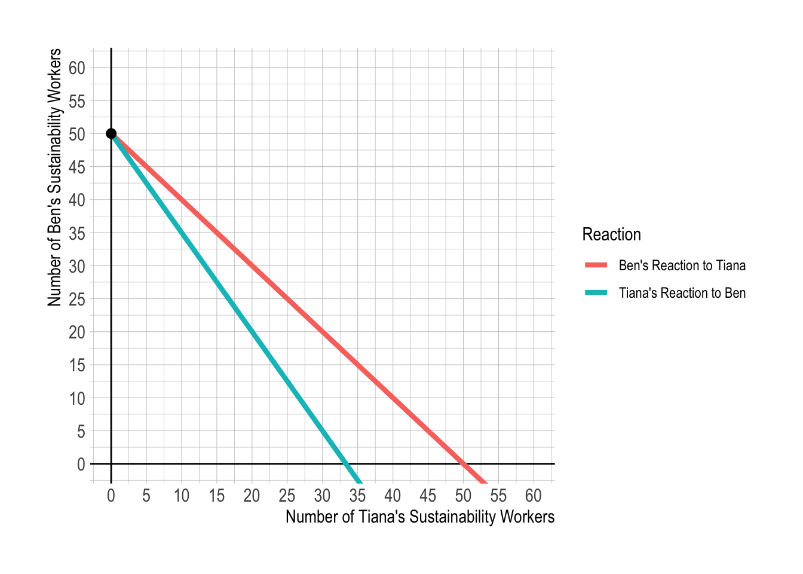

The town of Geneseo has two residents: Ben and Tiana. The town currently funds its sustainability department solely from the individual contributions of Ben and Tiana.
Ben and Tiana have their own utility functions, \(U_{B}\) and \(U_{T}\) respectively, over private goods ( \(X\) ) and total sustainability workers ( \(M\) ) of the forms:
The total provision of sustainability workers hired, \(M\), is the sum of the number hired by each of the two persons:
\[M = M_{B} + M_{T}.\]
Ben and Tiana both have income of \(\$100\), and the price of both the private good and the sustainability worker is \(\$1\). Therefore, they are limited to providing between 0 and 100 sustainability workers.
Q1
How many sustainability workers are hired if the Geneseo government does not intervene?
How many are paid for by Ben? By Tiana?
Describe the Ben’s and the Tiana’s decisions on provision of sustainability workers using a graph in the \((M_{B}, M_{T})\) space.
Hint: Solve each individual’s utility maximization problem under his or her own budget constraint. For example, the following is Ben’s utility maximization problem:
\[
\begin{align}
\max_{X_{B},\, M_{B}}\; U_{B} \,=\,& 3 × \log(X_{B}) + 3 × \log(M)\tag{P-Ben}\\
\text{subject to}\quad 100 \,\geq\,& 1\times X_{B} \,+\, 1 \times M_{B}\tag{Budget-Ben}\\
M \,=\,& M_{B} \,+\, M_{T}
\end{align}
\] Note that (Budget-Ben) holds with equality at the optimal level of bundle \((X_{B}^{*}, M_{B}^{*})\) Ben would like to choose.
Answer for Q1
Taking the Tiana’s action and the prices of the private good and the sustainability worker as given, Ben maximizes his utility:
Both Ben’s and Tiana’s optimal decisions on how many sustainability workers to hire are characterized by (Action-B) and (Action-T), respectively. Solving the two unknowns—\(M_{B}\) and \(M_{T}\)—in the two equations—(Action-B) and (Action-T)—gives us:
\[
(M_{B}^{*}, M_{T}^{*}) = (50, 0).
\] Therefore, the total provision of sustainability workers under no government intervention is \(M^{*} = M_{B}^{*} + M_{T}^{*} = 50\).
The following describes Ben’s and Tiana’s reactions to the other individual’s choice on the number of sustainability workers to hire:
Code
df <-data.frame(m_i =seq(0, 150, 5),Ben =50-seq(0, 150, 5),Tiana =50-1.5*seq(0, 150, 5))df <- df %>%rename(`Ben's Reaction to Tiana`= Ben,`Tiana's Reaction to Ben`= Tiana) %>%pivot_longer(`Ben's Reaction to Tiana`:`Tiana's Reaction to Ben`,names_to ="Reaction",values_to ="fn")ggplot(df, aes(x = m_i, y = fn )) +geom_vline(xintercept =0) +geom_hline(yintercept =0) +geom_line(aes(color = Reaction), size =1.5) +geom_point(data =data.frame(x =0, y =50),aes(x = x, y = y), size =2.5) +labs(x ="Number of Tiana's Sustainability Workers",y ="Number of Ben's Sustainability Workers", ) +scale_x_continuous(breaks =seq(0,150,5)) +scale_y_continuous(breaks =seq(0,150,5)) +coord_cartesian(xlim =c(0,60), ylim =c(0,60)) +theme_ipsum() +theme(axis.title.x =element_text(size =rel(1.25)),axis.title.y =element_text(size =rel(1.25)))

Q2
What is the socially optimal number of sustainability workers?
Hint: Solve the social welfare maximization problem under each individual’s budget constraint. For example, the following is the social welfare maximization problem:
\[
\begin{align}
\max_{X_{B},\, M_{B}, X_{T},\, M_{T}}\; SW \,=\,& U_{B} \,+\, U_{T}\tag{P-SW}\\
=\,& 3 × \log(X_{B}) \,+\, 4 × \log(X_{T}) \,+\, 5 × \log(M)\\
\text{subject to}\quad 100 \,\geq\,& 1\times X_{B} \,+\, 1 \times M_{B}\tag{Budget-Ben}\\
100 \,\geq\,& 1\times X_{T} \,+\, 1 \times M_{T}\tag{Budget-Tiana}\\
M \,=\,& M_{B} \,+\, M_{T}
\end{align}
\] Note that both (Budget-Ben) and (Budget-Tiana) hold with equality at the socially optimal level of bundle \((X_{B}^{o}, M_{B}^{o}, X_{T}^{o}, M_{T}^{o})\) the Geneseo Government would like to choose.
Answer for Q2
Taking both Ben’s and Tiana’s budget constraints as given, the Geneseo government wants to maximize the social welfare \(SW = U_{B} + U_{T}\) by choosing an allocation of \(M_{B}\) and \(M_{T}\): \[
\begin{align}
\max_{M_{B}, M_{T}}\; SW &= 3 × \log(100 - M_{B}) + 4 × \log(100 - M_{T}) + 5 × \log(M_{B} + M_{T}),\tag{SWMax}
\end{align}
\]
The Geneseo Govenment’s allocation of the number of Ben’s and Tiana’s sustainability workers is characterized by (Action-SW-B) and (Action-SW-T). Solving the two unknowns—\(M_{B}\) and \(M_{T}\)—in the two equations—(Action-SW-B) and (Action-SW-T)—gives us:
\[
(M_{B}^{o}, M_{T}^{o}) = \left(50, \frac{100}{3}\right).
\] Therefore, the socially optimal level of sustainability workers is \(M^{o} = M_{B}^{o} + M_{T}^{o} = \frac{250}{3}\), which is greater than the one in Q1. The sustainability workers are underprovided in the private market.
The following plots (Action-SW-B) and (Action-SW-T), describing how the Social Planner allocates Ben’s and Tiana’s sustainability workers:
The welfare-maximizing allocation serves as a benchmark for environmental protection the Geneseo government aims to implement.
Q3
If your answer in Q1 differs from Q2, explain economically and intuitively why they are different.
Answer for Q3
Key Concepts:
Market Equilibrium and Marginal Utility:
In a market equilibrium, each individual will make choices that equate their marginal utility (the additional satisfaction from consuming one more unit of a good) to the cost of that good. In this context, for the last sustainability worker hired, the marginal utility that each resident (Ben and Tiana) receives from the public good (sustainability workers) equals the marginal utility they get from consuming a private good. This is because, in equilibrium, people allocate their resources in a way that balances the benefits they get from different types of consumption.
2. Social vs. Individual Marginal Utility:
Social marginal utility refers to the total benefit society gets from an additional unit of a public good (in this case, a sustainability worker). The social marginal utility is the sum of the marginal utilities that each resident (Ben and Tiana) gets from the last sustainability worker.
Individual marginal utility is the benefit a single person (either Ben or Tiana) receives from the same worker. Since sustainability workers provide a public good that benefits everyone, the social marginal utility of an additional worker is greater than any individual’s marginal utility because it includes the benefits to both residents combined.
It is a coincidence that Ben’s contribution to the public good in both Q1 and Q2 happens to be the same. If Ben’s preference were identical to Tiana’s one, they would have both underprovided sustainability workers.
3. Public Goods and Free-Riding: - A public good is something that benefits everyone, and one person’s use of it doesn’t reduce its availability for others. Because of this, people often have an incentive to free-ride, meaning they hope others will contribute to the public good (like hiring sustainability workers) while they enjoy the benefits without contributing themselves.
In this example, Ben and Tiana individually do not fully appreciate the benefit of hiring more sustainability workers because they only consider their own marginal benefit, not the total benefit to society (the social marginal utility). This leads to an incentive for free-riding—each of them would prefer the other to contribute more while they contribute less.
Government’s Role:
The Geneseo government recognizes the full social benefit of sustainability workers, which is why it would hire more sustainability workers than Ben and Tiana would if they were acting alone. While individuals focus on their own marginal benefits, the government takes the broader social marginal utility into account, leading to a higher optimal level of investment in the public good (sustainability workers).
Conclusion:
In essence, this classwork explains that individuals tend to undervalue public goods (like sustainability workers), leading to underinvestment if left to private decision-making. However, the government, considering the social benefit, would like step in to correct this by hiring more sustainability workers than individuals like Ben and Tiana would on their own, counteracting the free-rider problem.